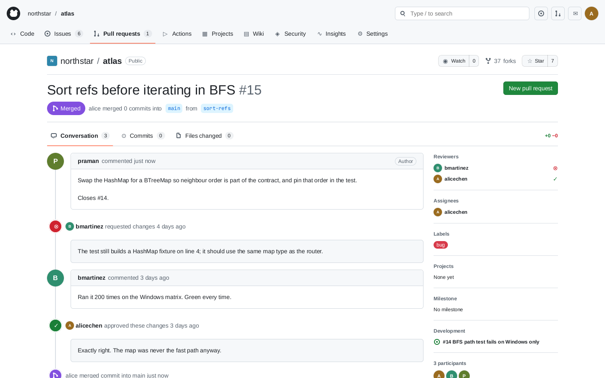

Checking the pull-request workflow
15 policies, 77,748 explored states, and nine reproducible counterexamples within a depth-five search.

The experiment
The checker started on the open pull-request list for the simulated northstar/atlas repository. Alice acted through her Mac, using engine 0.2.0 and seed 7. The run completed on 21 September 2026 in approximately 2 hours 59 minutes.
Six policies held within the bounded search. Nine had reachable violations, and all nine recorded counterexamples reproduced from a fresh world.
A two-action counterexample
- Open “Sort refs before iterating in BFS.”
- Choose “Merge pull request” while bmartinez’s request for changes still stands.
The application allows the merge. The policy check reads the resulting state and reports the violation.
What the result covers
The search exhausts depth five within the configured workflow, action enumeration, finite text-input domains, and state abstraction. It explores 77,748 states, including 9,473 distinct states under that abstraction. A requested depth of six was not completed.
A policy that holds in this search is not proven for every input, every workflow, longer trajectories, or a production GitHub installation. The result applies to this simulated world and these explicit search bounds.
Inspect or reproduce the run
Download the complete report for all policies, action sequences, replay hashes, input domains, and search settings. The model-checking guide explains how to configure and run the checker.